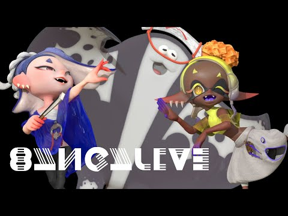

The Voice Actors Behind The Characters
While the singing and dialogue of Deep Cut, alongside Splatoon characters in general, may sound AI-generated or created with a vocalist-type keyboard, they are actually voiced by real people. Shiver is voiced by Anna Sato (left) and Frye is voiced by Laura Yokozawa (right). Although we know of Shiver and Frye's voice actors, we currently do not know Big Man's. Additionally, as with other performance groups and dialogue in the game, Deep Cut's singing is comprised of Japanese gibberish with a thick voice filter placed over to give the "underwater" sound. This is how the "language" in the Splatoon world is created. The video link below to the voice actors singing already has the voice filters placed over, so we cannot actually hear what they sounded like before their voices were edited. Outside of Splatoon, Sato sings Japanese folk music, while Yokozawa creates music based on stories and does voiceover work for commercials.

Real Life Concerts
In real life, Nintendo hosts actual live shows with Deep Cut. What you see are holograms of the characters. You will also notice that they have a live band: guitarists, synth players, and drummers, to name a few. Sometimes there will be an "opening act" for them, such as KK Slider from the Animal Crossing series. Splatoon concerts are typically held in Japan but they are always recorded and uploaded to YouTube for international fans. And even though it's sung in a fictional language, all different kinds of people enjoy Splatoon and its music as a whole, from small children to young adults!